|
Ur Stockholms gatunamn Förslaget till namnändring hade kommit från hyresgästeroch husägare vid Björngårdsgatan och Björngårdsbrunnsgatan »enär förvexling af dessa parallelt gåendegator dagligen egde rum till stor olägenhet för den trafikerande allmänheten». Namnförslaget var ocksåderas; de hänvisade till att Bellman var född »i egendomen N:o 24 vid denna gata». Därmed avsågs det s.k. Daurerska huset som låg i hörnet av Bellmansgatan och Hornsgatan. Det revs 1901 i samband med denbreddning och nedsprängning av Hornsgatan, som ledde till att Bellmansgatan kom att bestå av två frånvarandra skilda gatudelar. Den del av gatan som låg söder om S:t Paulsgatan heter ännu vid mitten av 1800-talet Kämpesgränd ellerKämpens gränd. Namnet är känt sedan 1660-talet, då en gård lokaliseras till »quarteret Småland och Kempens grend». Det är ovisst vem det är som gett anledning till namnet men enligt Holms tomtbok 1679 låg ikvarteret Marsvinet vid nuvarande Björngårdsgatan »Sal. Kiämpens gårdh». I kvarteret Trappan vidnuvarande Bellmansgatan låg 1713 »Banco kneckten Kiempes gårdh». Genom OÄ:s beslut 1857 ersättesKempens gränd av Björngårdsbrunnsgatan. Under 1600-talet omtalas den del av nuvarande Bellmansgatan som ligger norr om Brännkyrkagatansåsom »Höghlåfftzgrenden» (1649) och »Högeloftz Gathun» (1661). Det är med all säkerhet kvartersnamnetHögloftet eller Höga Loftet som har gett anledning till namnet. Namnet Björngårdsbrunnsgatan som uppträder i källorna från 1670-talet har sannolikt från början avsettgatusträckningen från S:t Paulsgatan och norrut. Namnet hänför sig till den brunn, som fanns invid Björngården(se Björngårdsgatan). Om den lämnar Elers (1801) följande upplysningar: »Brunnen på Björngårds brunsgatan,som är för passagen mycket hinderlig, har en öfverbyggnad af trä, täkt med järnplåtar, och 2:ne pumpar; nyttjas... af kringboende, till hvarjehanda Hushållsbehov.» Den omtalas på 1830-talet såsom Maria Brunn, vilket gettanledning till namnet Maria Brunnsgränd, som 1857 ersättes av Björngårdsbrunnsgatan. 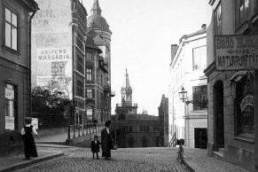
Bellmansgatan 6-10, 1-3. Norrut från Tavastgatan. 1901-21. I fonden Mariahissen. | | Katarinahissen som stod färdig 1883 blev en succé. Exemplet smittade av sig.År 1884 fick revisorn A. Herlitz koncession av stadsfullmäktige »för anläggandet av en så kallad hiss med gångbro från Maria Strandgata till Tavastgatan«. Koncessionen överläts till Maria Hiss- och Magasinaktiebolag som 1886 lät uppföra anläggningen efter ritningar av arkitekten Gustaf Dahl. Byggnaden beskrivs i Ny Illustrerad Tidning på följande sätt: Som bekant är själva elevatorn inbyggd i den eleganta tornprydda byggnaden. Denna innehåller för övrigt kontorslokaler, rum till uthyrning, saluhallar, flera präktiga magasinslokaler, kafé och matsalar. Löjtnant W Åman har för gymnastik förhyrt en våning. |
| Järnbron som förbinder hissen med Bastugatan och Tavastgatan byggdes av Atlas verkstäder. När bron skulle provbelastas lät man skicka efter ett antal så kallade hjon från den Dihlströmska arbetsinrättningen vid Stora Glasbruksgatan/Nytorgsgatan. Man hade beräknat att bron med denna belastning skulle fjädra någon centimeter, vilket också stämde. De två översta våningarna med en strålande utsikt över Riddarfjärden uppläts till restaurang. I sina frispråkiga memoarer har August Hallner berättat om sjutton år som källarmästare på restaurang du Sud. Restaurangen öppnade den 24 augusti 1886, samma dag som den gästande konungen av Portugal företog en triumffärd från Drottningholm till Riddarholmen. Tydligen fick de kungliga läsa eller höra några lovord om utsiktspunkten. Någon vecka senare fick du Sud besök. Först kom kung Oskar och sedan drottning Sofia, drottningen med jakten Sköldmön från Drottningholm. Besöket på du Sud lär ha varit drottningens enda »krogbesök«.
| | 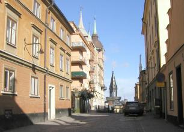
 2004. Bellmansgatan 10, 8, 6 2004. Bellmansgatan 10, 8, 6 |
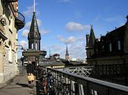 2004 | | Även om du Sud låg ganska avlägset till blev den under sin glanstid en samlingspunkt för författare och konstnäreroch andra glada sällskapskretsar. Enligt Hallner var Viktor Rydberg en av stamkunderna. Han kom i regel ensam, villebetjänas av samma kypare och frågade alltid efter sin älsklingsrätt, höns med ris. Även skalden Daniel Fallström hörde till du Suds gäster. Han tittade inte bara på utsikten utan även på servitrisen»Vackra Hedvig« och skaldade: | | 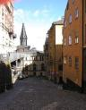
Bellmansgatan ned mot Pryssgränd. Bellmansgatan 1 och 5 till höger och Mariahissen rakt fram. |
Två ögon jag ser
som tittafram bakom sammetsgardiner
och jag menar, de ögonen äro förmer
än källarmästarns alla viner. | | 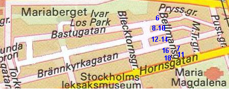 |
Men restaurangen började gå allt sämre och 1903 stängdes den. Utsikten var nog fin men läget var inte längre bra.Folk var inte roade av att åka Mariahissen. Den verkliga knäcken kom när den nya slussen var färdig och färjelinjen frånSöder Mälarstrand till Gamla stan lades ner. År 1937 stängdes hissen för gott. När byggnaden i enlighet med koncessionsvillkoren tillföll staden 1961 ansågs den som ett rivningsobjekt och stod obeaktadända till hösten 1975. Under 1977 rustades huset upp och det försvunna tornet rekonstruerades efter originalritningarna. Idagfinns här lokaler för kontor, föreningsverksamhet m.m. | Bellmansgatan 6 Fastigheten byggdes under åren 1891-92. Den 30 november 1892 slutbesiktigades ateljéerna och vindsrummen och därmedvar huset fullbordat. Ägare var då grosshandlare Oscar Seippel som inköpt fastigheten på exekutiv auktion den 30 mars1892. En större invändig ombyggnad företogs under åren 1929-30. Den arkitekt som anlitades för det nya bygget var Valfrid Karlsson. Han var en högt kompetent yrkesman som vann pris iflera arkitekttävlingar, t.ex. för nytt riksdagshus och operahus, men nästan aldrig fick se sina projekt förverkligade. ValfridKarlsson som kom från landsorten accepterades aldrig av etablissemanget. Det finaste han fick bygga var ett begravningskapell på Sandsborgskyrkogården, Stuckatörens hus vid David Bagares gata och så huset i kv. Bössan nr 11. Om Valfrid Karlsson inte blev känd så blev huset desto mer bekant för sina hyresgäster, som tillhördekändiskretsarna i 1890-talets Stockholm. Först kallades det ståtliga huset för Mälarpalatset, men sedan den kunnige och välkände konsthistorikern C.G. Laurin några år efter husets färdigställande flyttat dit började det i stället kallas Laurinska huset. Han bodde i huset från1893 till sin död 1940 varefter hans son övertog lägenheten.
Det nygifta paret Laurin flyttade in i en femrumsvåning tre trappor upp åt sjösidan. Man trivdes storartat redan frånbörjan. »Vid 1870-talets mitt« skrev Laurin senare i sina Minnen, »reste jag från Munkbron till Ragvaldsgatan och lektepå Mariabergets sida. Härifrån blickade nu på 1890-talet min hustru och jag ut över det Stockholm, som vi båda älskadeså mycket och här levde vi nu i flera år ett sorglöst liv, unga och glada och väl vetande att egen härd är guld värd.«
| | 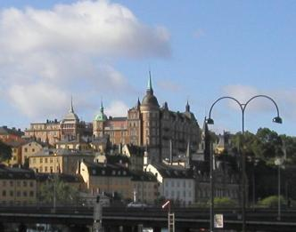
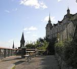
Laurinska huset och Mariahissen från Montelius-
vägen | | 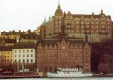
Bellmansgatan 6, Laurinska huset, med Mariahissen i förgrunden. |
|
Under många år var det Laurinska hemmet en sällskaplig samlingspunkt för den humanistiska kultureliten i Stockholm. Till den innersta kretsen hörde författarna Bo Bergman och Hjalmar Söderberg.Från 1897 hade Laurin som grannar i huset konstnärsparet Georg och Hanna Pauli. En annan på senare tid känd hyresgäst var en av de stora naivisterna i svensk konst, Hilding Linnqvist. Han flyttadesenare till samma hus som Ivar Lo Johansson, Bastugatan 21. Linnqvist var verksam in i det sista till sin bortgång 1984.Ägare av fastigheten är sedan januari 1979 bostadsrättsföreningen Bössan nr 11.
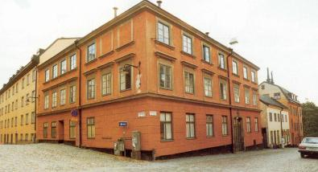
Bellmansgatan 7. Hörnet med Brännkyrkagatan österut. | | Bellmansgatan 7 Gårdshuset byggdes i två etapper på 1740-talet då fastigheten ägdes av spannmålshandlaren Lars Kiellbeck. Huset åt Bellmansgatan och Brännkyrkagatan uppfördes i två våningar 1759. Fasaden höjdes 1861, då troligen även fasaddekoren tillkom. Ägare var mamsell Elisabeth Maria Enequist. Bellmansgatan 14 Huset har en tredelad fasad. Mittpartiet byggdes 1755, hörndelen uppfördes i flera etapper på 1770-talet. Den västra delen tillkom först 1876.Carl Magnus Rosell har i en studie visat att de som bott i huset, oberoende av brand, tillbyggnader, ägandebyten och moderniseringar, utgjorten genomsnittlig sammansättning av hyresgäster av den karaktär som huset byggts för - dvs. en genomsnittlig befolkning av »vanligt folk«. |
|
Vid branden 1759 ägdes husen i kvarteret av det lägre borgerskapet, hantverkare och skeppare De flesta hyresgästerna stod utanförborgerskapet som t.ex. sjömän, arbetare av olika slag, änkor och fattighjon.
År 1780 beboddes huset förutom av ägaren av en bokhållare, en skomakarmästare, en avskedad gardessoldat, en bancokammardräng och två bancobetjänter. Dessutom fanns i huset två änkor och två sängliggande och ofärdiga jungfrur. Sammanlagt bodde i detdåvarande husets 15 rum och 8 kök 39 personer. År 1950 har hyresgästerna titlar som musiker, målare, köpman, sömmerska, chaufför, cementarbetare, dekoratör samt fruar ochfröknar. År 1960 visar i stort sett en likartad sammansättning av hyresgäster.År 1970 har huset börjat tömmas på sina gamla hyresgäster och lägenheterna används nu som genomgångsbostäder. Året därpå är huset lika obebott som efter den stora branden 1759. | | 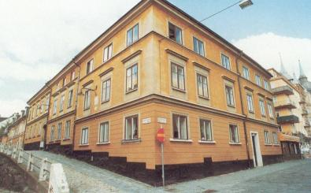
Bellmansgatan 14. Hörnet med Brännkyrkagatan västerut. |
När huset efter 1975 års ombyggnad fick nya hyresgäster hade dessa titlar som verkmästare, byggnadsarbetare, chaufför, kontorist,packare, städerska, skådespelare, pol.mag., teleingenjör, försäkringstjänsteman och sekreterare. Utvecklingen för huset genom åren och sammansättningen av hyresgäster är representativ för många av husen på Östra Mariaberget. 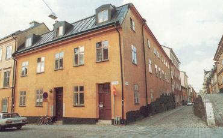
Bellmansgatan 16. Hörnet med Brännkyrkagatan västerut.
Till höger Bellmansgatan 18 och 11 (Hornsgatan 40 och 38). Trappanordning i Hornsgatan upp till Bellmansgatan.
| | Bellmansgatan 16 Huvudbyggnaden uppfördes 1760 för handlanden Arvid Hasselqvist. Flygeln uppfördes i en våning 1791 för konsthandlare Lindvall. Denhar senare byggts på.
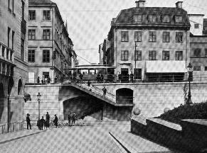 |
| |